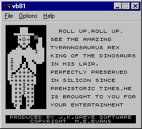
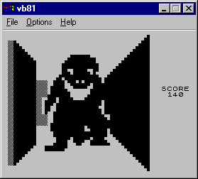
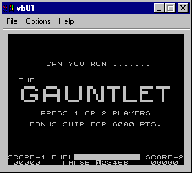
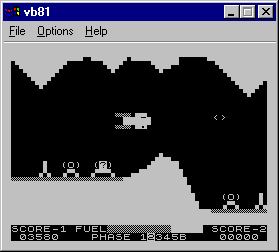

|
Sponsored by:

Grok Developments Ltd
vb81 - Sinclair ZX81
Emulator Hot on the heels of the
Speccy emulator, is an emulation of the Spectrum's older brother, the ZX81. It
uses the same VB core as vbSpec, but due to differences in the display hardware
and processor speed of the ZX81, this will run happily at full speed on just
about any PC that is capable of running Windows at a usable speed.
|
NOTE: I haven't updated vb81 in quite
some time, however there is a great new version of vb81 by XavSnap
which includes additional features such as an integrated disassembler
and support for additional hardware such as the Larken disk controller and both
the Memotech and G007 high-resolution graphics cards. It is available from
http://zx81.vb81.free.fr/ and is well worth a look!
Features in vb81 Version
1.30
Version 1.30 contains the following new
features:-
- Significantly faster Z80 emulation core. You
should have no problems running vb81 v1.30 at full speed in both SLOW and FAST
modes even on a relatively low-spec Windows system
- Improved performance of both standard and
hi-res display routines.
- Fixed a couple of bugs in the keyboard support
which caused many games not to respond to key-presses.
- Added new 3x display magnification
option.
- New 'Allow writes to shadow ROM area' option
allows access to the 8K-16K area of the memory map. Some games use this to
provide hi-resolution graphics and custom character sets (FROGGER- for
example).
- Fixed a bug in the interrupt routine that
caused FRAMES to be incremented wrongly. Some games such as Rocket Man froze
after a few seconds or minutes of playing.
- Fixed some minor bugs in the Z80 emulation. I
believe the CPU emulation is now 100% correct in terms of timing, flag
operation, and support for undocumented opcodes -- let me know if you think
otherwise!
- Playtested against literally hundreds of ZX81
games to ensure full compatiblity. The only known problem is ZX-Xtricator,
which has a custom overscanned hi-res display routine that does not yet work
properly with vb81.
Other Features in vb81
- Emulates both SLOW and FAST modes.
- Emulates psuedo hi-res graphics routines as
used by innovative games such as Forty Niner, Rock Crush,
Dan's Revenge, and Rocket Man.
- Supports loading and saving of standard
".P" tape files used by various other ZX81 emulators.
- Includes optimised 'standand' and
'double-size' display options.
- Emulates undocumented Z80 op codes, and
correctly emulates all bits of the Flags register.
- Native 32-bit Windows application runs under
Windows 95, Windows 98, NT, and Win2K.
- Emulates Memotech's MemoCalc spreadsheet ROM.
Download the essential
binary files - (80KB) - If you already have the Microsoft VB6 runtime files
on your PC (MSVBVM60.DLL, VBA6.DLL and COMDLG32.OCX are required by vb81) then
this download is all you need to run the emulator on your PC. There are also
some ZX81 games included in the ZIP file: 3D Monster Maze, The Gauntlet and
ZX-Galaxians. Use this option if you are upgrading from an earlier version
of vb81..
Download the complete
binary distribution - (2.20MB) - A complete installer that contains all of
the runtime libraries necessary to run the emulator. It has an uninstall option
too, but you won't be needing that :) 3D Monster Maze, The Gauntlet and
ZX-Galaxians games are also included.
Download the source -
(64KB) - Build it yourself with VB6. The source code is distributed under the
terms of the GNU General Public Licence (GPL).
Screenshots


3D Monster Maze - J.K. Greye
Software


The Gauntlet - Colourmatic Computing
Copyright
©2002 Grok Developments Ltd